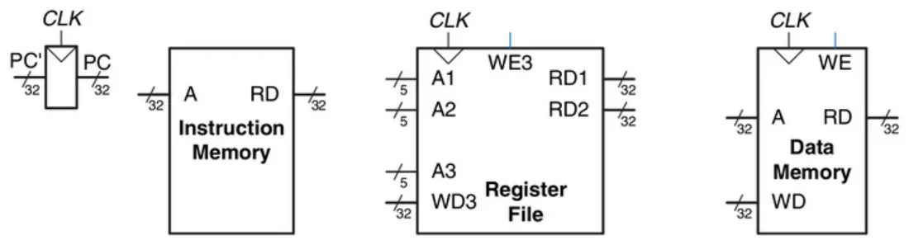
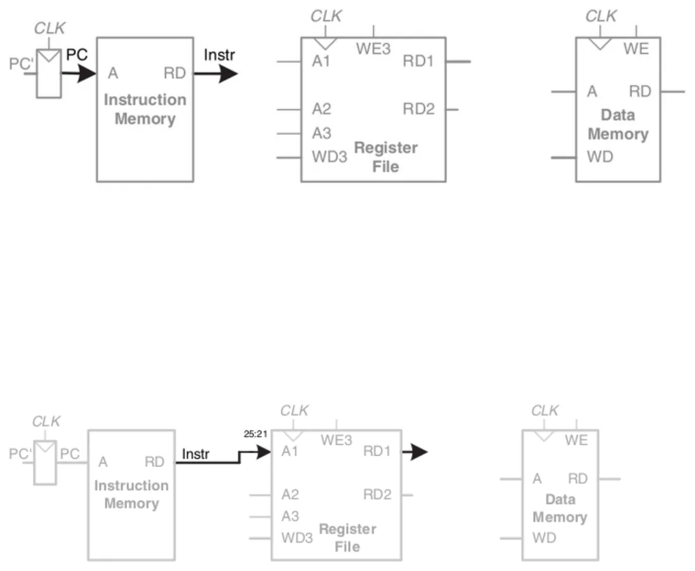
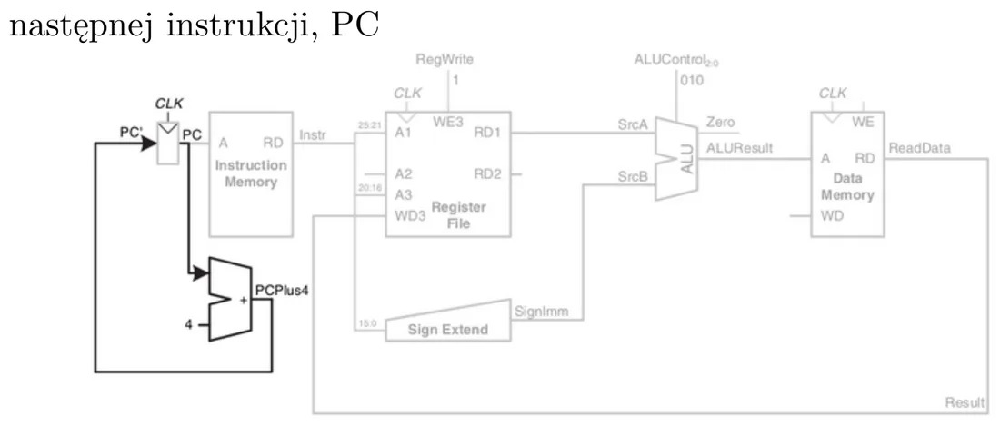
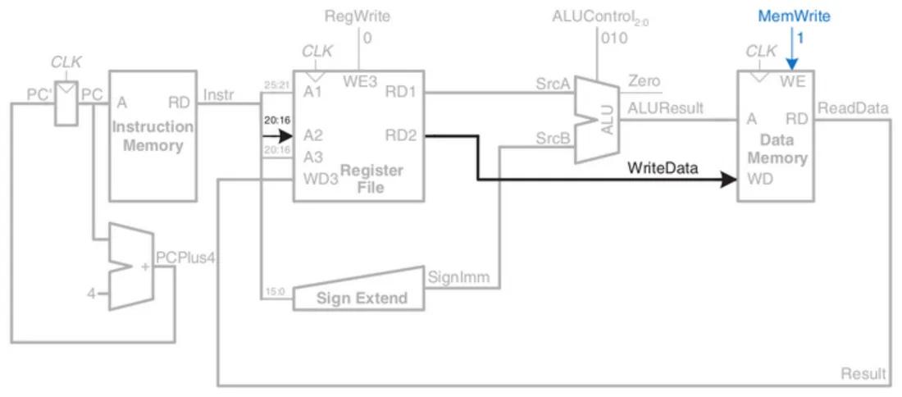
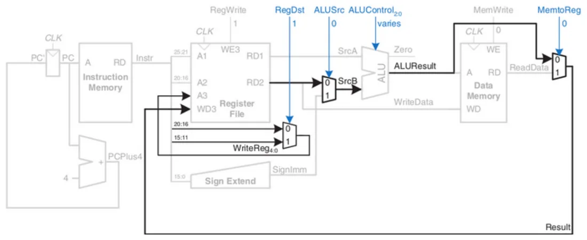
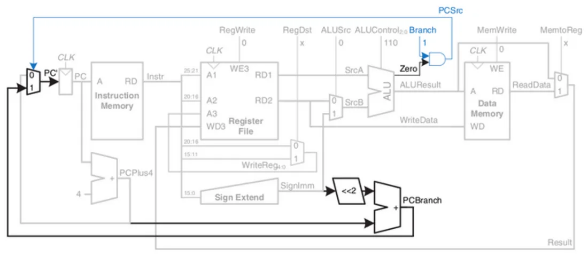
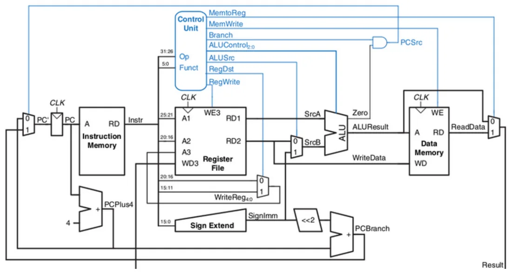
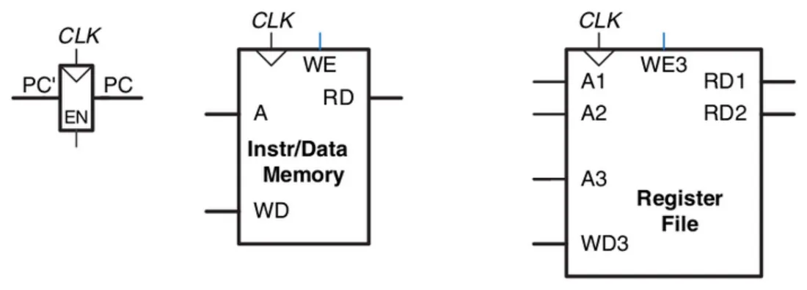
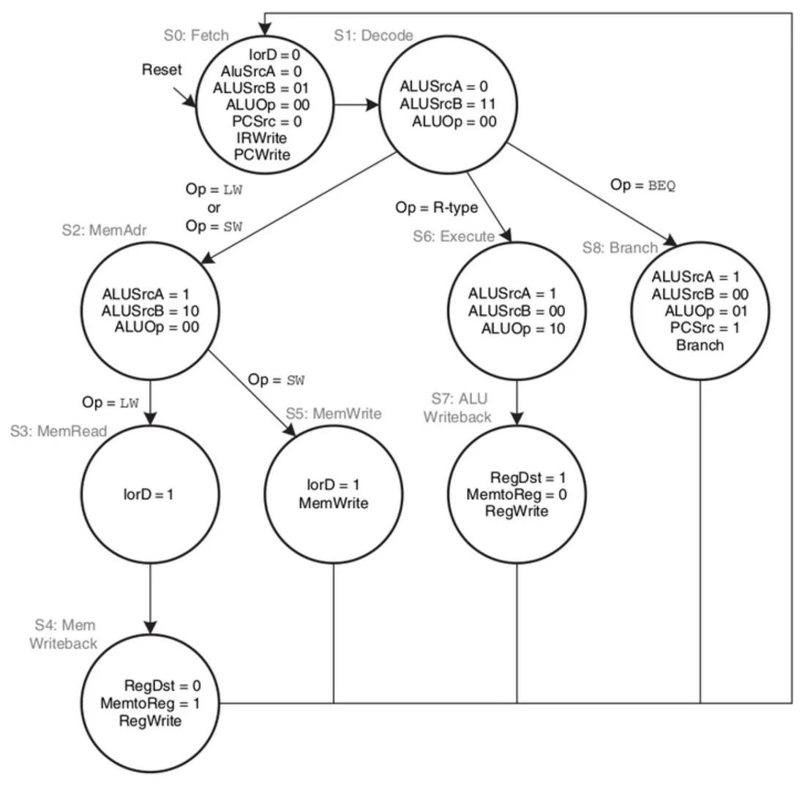
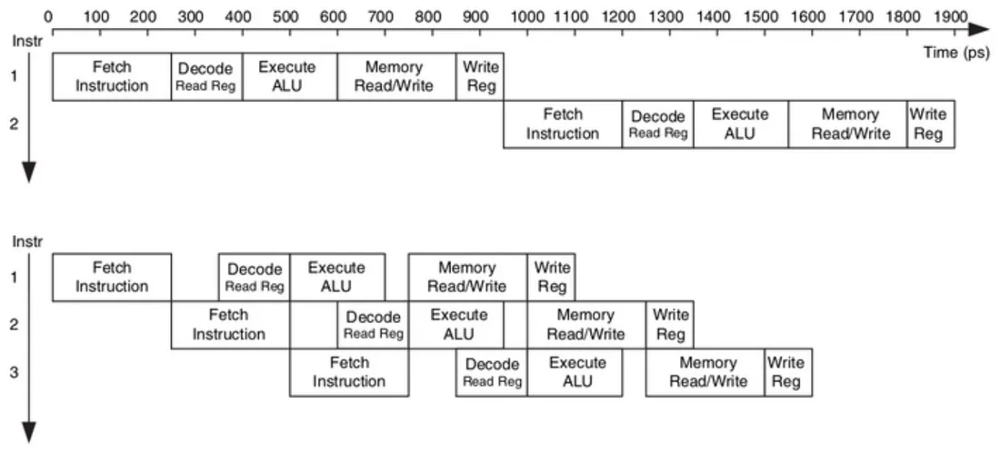

Architektura a mikroarchitektura
- Architektura to komputer widziany oczami programisty: zestaw instrukcji i stan (rejestry, pamięć). Przykłady: MIPS, x86.
- Mikroarchitektura to konkretny sposób zbudowania sprzętu, który tę architekturę realizuje. Jedna architektura może mieć wiele mikroarchitektur — różniących się wydajnością, kosztem i złożonością.
Na wykładzie rozważamy tylko mały podzbiór instrukcji MIPS:
| Grupa | Instrukcje | Co robią |
|---|---|---|
| arytmetyczno-logiczne (typ R) | add, sub, and, or, slt | działanie na dwóch rejestrach, wynik do trzeciego |
| pamięciowe | lw, sw | odczyt słowa z pamięci / zapis słowa do pamięci |
| warunkowe | beq | skok, jeśli dwa rejestry są równe |
Same instrukcje i ich zapis są omówione w wykładzie 15 — jeśli nie wiesz, co to lw albo „pole rt”, zajrzyj najpierw tam.
Dwie części projektu
- Ścieżka danych (datapath) — to, przez co płyną dane: pamięci, rejestry, ALU, multipleksery. W MIPS jest 32-bitowa.
- Jednostka sterująca (control) — patrzy na aktualną instrukcję i wytwarza sygnały sterujące: co ma wybrać każdy multiplekser, który rejestr zapisać, czy pisać do pamięci.
Po ludzku
Ścieżka danych to tory i zwrotnice, jednostka sterująca to dyżurny ruchu, który dla każdego pociągu (instrukcji) przestawia zwrotnice tak, żeby dane dojechały, gdzie trzeba.
Cztery główne elementy


| Element | Co robi | Wejścia / wyjścia |
|---|---|---|
| Program Counter (PC) | zwykły rejestr 32-bitowy; wskazuje aktualną instrukcję | — |
| Instruction Memory | pamięć instrukcji; dla adresu A podaje 32-bitową instrukcję | A → RD |
| Register File | 32 rejestry; dwa porty odczytu i jeden port zapisu | adresy A1, A2 (5 bitów) → RD1, RD2; zapis: adres A3, dane WD3, zezwolenie WE3 |
| Data Memory | pamięć danych | adres A; WE = 1: zapis WD przy zboczu zegara; WE = 0: odczyt na RD |
Odczyt z pamięci instrukcji, pliku rejestrów i pamięci danych jest kombinacyjny (natychmiastowy); zapis następuje przy narastającym zboczu zegara.
Trzy mikroarchitektury
| Jak wykonuje instrukcję | |
|---|---|
| Jednocyklowa (single-cycle) | całą instrukcję w jednym cyklu zegara; prosta jednostka sterująca |
| Wielocyklowa (multicycle) | w serii krótszych cykli; prostsze instrukcje zajmują mniej cykli |
| Potokowa (pipelined) | jak jednocyklowa podzielona na etapy; kilka instrukcji jest w trakcie wykonywania jednocześnie |
Miarą wydajności jest czas wykonania programu:
Procesor jednocyklowy — składamy ścieżkę danych
Budujemy ścieżkę stopniowo, na przykładzie instrukcji lw (załaduj słowo z pamięci do rejestru).
Instrukcja lw krok po kroku
- Pobranie (fetch): PC podaje adres, pamięć instrukcji wystawia 32-bitową instrukcję Instr.
- Odczyt rejestru bazowego: pole
rsinstrukcji (bity 25:21) idzie na adres A1 pliku rejestrów; na RD1 pojawia się adres bazowy. - Rozszerzenie znaku: 16-bitowe pole immediate (przesunięcie) trzeba rozszerzyć do 32 bitów z zachowaniem znaku — powstaje SignImm.
- Obliczenie adresu: ALU dodaje adres bazowy (SrcA) i przesunięcie (SrcB). Wynik ALUResult to adres w pamięci danych.
- Odczyt z pamięci i zapis do rejestru: dane z pamięci (ReadData) wracają do pliku rejestrów i na koniec cyklu są zapisywane w rejestrze wskazanym przez pole
rt(sygnał RegWrite). - Następna instrukcja: instrukcje mają 32 bity = 4 bajty, więc nowa wartość licznika to PC + 4 (osobny sumator).




Dokładamy kolejne instrukcje
sw (zapis do pamięci): oprócz adresu potrzebna jest wartość do zapisania. Drugi rejestr (pole rt, bity 20:16) czytamy portem A2; z RD2 trafia na wejście WriteData pamięci danych. Sygnał MemWrite zezwala na zapis.


Typ R (add, sub…): ALU działa na dwóch rejestrach, a wynik wraca do rejestru — nie z pamięci. Potrzebne są multipleksery:
- ALUSrc — drugi argument ALU: rejestr (0) czy rozszerzona stała (1),
- MemtoReg — co zapisać do rejestru: wynik ALU (0) czy dane z pamięci (1),
- RegDst — który rejestr jest docelowy: pole
rt(dlalw) czy polerd(dla typu R).


beq (skok warunkowy): ALU odejmuje dwa rejestry; jeśli wynik to zero, ustawia flagę Zero. Adres skoku: PCBranch = PC + 4 + SignImm × 4 (przesunięcie w lewo o 2 bity to mnożenie przez 4). Multiplekser sterowany sygnałem PCSrc wybiera, czy do PC trafi PC + 4, czy PCBranch.


Kompletny procesor jednocyklowy


Jednostka sterująca wylicza sygnały sterujące z pól opcode i funct instrukcji. Składa się z dwóch części.
Dekoder główny — na podstawie opcode:
| Instrukcja | Opcode | RegWrite | RegDst | ALUSrc | Branch | MemWrite | MemtoReg | ALUOp |
|---|---|---|---|---|---|---|---|---|
| typ R | 000000 | 1 | 1 | 0 | 0 | 0 | 0 | 10 |
lw | 100011 | 1 | 0 | 1 | 0 | 0 | 1 | 00 |
sw | 101011 | 0 | X | 1 | 0 | 1 | X | 00 |
beq | 000100 | 0 | X | 0 | 1 | 0 | X | 01 |
X = „wszystko jedno” (np. sw niczego nie zapisuje do rejestru, więc nie ma znaczenia, co wybierze RegDst).
Dekoder ALU — na podstawie ALUOp (i ewentualnie pola funct):
| ALUOp | Funct | ALUControl | Działanie |
|---|---|---|---|
| 00 | X | 010 | dodaj (dla lw, sw) |
| 01 | X | 110 | odejmij (dla beq) |
| 10 | 100000 | 010 | add |
| 10 | 100010 | 110 | sub |
| 10 | 100100 | 000 | and |
| 10 | 100101 | 001 | or |
| 10 | 101010 | 111 | slt (ustaw, jeśli mniejszy) |
Jednostka sterująca procesora jednocyklowego jest układem kombinacyjnym — te dwie tabele to po prostu tabele prawdy.
Przykład z wykładu: instrukcja or
Plik rejestrów czyta dwa rejestry źródłowe (pola 25:21 i 20:16). Drugi argument ALU pochodzi z rejestru (ALUSrc = 0). To instrukcja typu R, więc ALUOp = 10, a dekoder ALU z pola funct ustala ALUControl = 001 (OR). Wynik bierzemy z ALU (MemtoReg = 0) i zapisujemy do rejestru (RegWrite = 1, RegDst = 1). To nie skok (Branch = 0), więc do PC trafia PC + 4.
Wady procesora jednocyklowego
- Cykl zegara musi być tak długi, żeby zdążyła się wykonać najwolniejsza instrukcja (
lw) — choć większość jest szybsza. - Potrzebuje trzech sumatorów (ALU i dwa do obliczania PC), a szybkie sumatory są drogie.
- Ma osobne pamięci instrukcji i danych, a większość komputerów ma jedną wspólną.
Procesor wielocyklowy
Instrukcja jest dzielona na kilka krótszych kroków. W każdym kroku procesor robi jedną rzecz: czyta albo zapisuje pamięć lub rejestr albo używa ALU.
- Jedna ALU jest używana wielokrotnie — także do liczenia PC + 4 i adresu skoku (nie trzeba osobnych sumatorów).
- Jedna wspólna pamięć na instrukcje i dane: w jednym kroku czytamy instrukcję, w innym dane.
- Wyniki pośrednie trzeba gdzieś przetrzymać między krokami — stąd dodatkowe rejestry niearchitekturalne (niewidoczne dla programisty): Instruction Register (z sygnałem IRWrite), rejestry A i B (odczytane wartości rejestrów), ALUOut, Data.
- Dochodzą nowe multipleksery: IorD (adres pamięci: z PC czy z ALUOut), ALUSrcA (PC czy rejestr A), ALUSrcB (rejestr B, stała 4, SignImm…).


Jednostka sterująca jest teraz układem sekwencyjnym
Kolejność sygnałów sterujących zależy od instrukcji i zmienia się z kroku na krok — więc jednostka sterująca to automat stanów (dokładnie taki, jak w wykładzie 10). Każdy stan to zestaw wartości sygnałów sterujących.


Graf zawsze zaczyna się od stanów Fetch (pobranie) i Decode (dekodowanie); dalsza ścieżka zależy od rodzaju instrukcji.
Procesor potokowy


Wykonanie instrukcji dzieli się na etapy: Fetch → Decode → Execute → Memory → Writeback. Gdy pierwsza instrukcja przechodzi do etapu drugiego, do pierwszego wchodzi już następna. Pojedyncza instrukcja nie wykonuje się szybciej, ale w tym samym czasie kończy się ich znacznie więcej.
Po ludzku
Pralnia. Jednocyklowo: pierzesz, suszysz i składasz jeden wsad, i dopiero potem bierzesz następny. Potokowo: gdy pierwszy wsad się suszy, drugi już się pierze. Jedno pranie trwa tyle samo, ale pralnia wypuszcza je dużo częściej.
Zadania na ćwiczenia (ze slajdu)
Zadania podane na końcu tego wykładu dotyczą ostatnich ćwiczeń z Arduino: zliczanie naciśnięć przycisku z użyciem przerwania INT0, to samo metodą odpytywania, oraz generator 1 Hz, którego częstotliwość zmienia przycisk. Krok po kroku: Ćwiczenie 15.